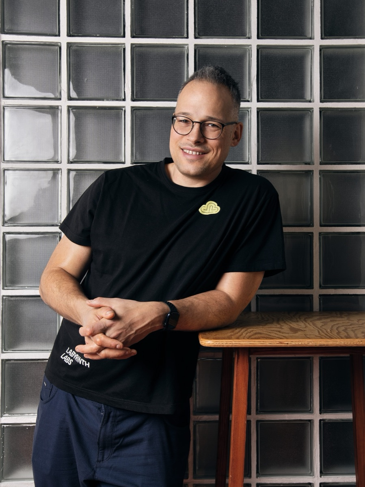

Adam Hamšík
DevOps engineer at heart and, above all, a builder.
I'm the co-founder and CEO of Labyrinth Labs, a company built on engineering excellence, an open-source mindset and a #nobullshit culture. Together with my co-founders I built a team of DevOps, Platform, Business and People specialists, and a business model centred on our cloud-native platform, LARA.
Today I spend most of my time on strategy and leading the company, but I still enjoy a deep technical debate and a pragmatic fix for a real problem.
I believe in building things that last. A company has more in common with an orchard than with a machine: you plant it, you don't assemble it. It takes years before it bears fruit, it has to survive droughts and storms, and the trees that grow well are the ones that shelter each other. I try to run Labyrinth Labs the same way, with people who help each other grow and a product, LARA, that compounds year over year instead of being rebuilt every season.
Below are the side projects I maintain in public, plus talks, podcasts and press.
Projects
- Slovak Election Poll Analysis Seat projections for the Slovak parliament from current polling, using a tuned Hagenbach-Bischoff model with trend analysis. Polls are scraped and the page is rebuilt automatically. haad.github.io/sk_elections
- Avel Nights Table-side companion for the board game Chronicles of Avel: random round events and optional quests that add replay value without any new printed components. haad.github.io/CoA-expansion-set
- Clipsmith Keyboard-first clipboard history, code snippets, AI prompt library and offline documentation browser for macOS. Native Swift, open source. haad.github.io/Clipsmith
- NetBSD Kernel developer. Implemented LVM (Logical Volume Manager) support for NetBSD, including the device-mapper driver, and worked on the port of ZFS to the NetBSD kernel. netbsd.org
Mentoring
Product and engineering culture are inseparable: you can't build something people love inside a company people want to leave.
I mentor founders and engineering leads through Startup Awards Slovakia, Growni and the TechFellows community on cloud architecture, hiring the first engineers, pricing technical work and staying focused. If you're building a company, launching a startup or standing up a platform team, I'm happy to talk. Honest feedback, no magic shortcuts.
Talks & podcasts
- 2026 Ako sa žije (v) No Bullshit Culture
- 2026 #nobullshit.camp 2026, opening
- 2026 Firma bez investorů vyrostla na 30 lidí. Klíčem bylo přestat prodávat hodiny práce
- 2022 Kubernetes Community Days Czech & Slovak 2022
- 2021 Čo je CI/CD proces a prečo ho vo firme chcete
- 2020 Kubernetes a Cloud native v praxi
Press
Slides
Writing
- Nothing published here yet.